A few projects demonstrating some use of different languages and libraries...
A Python crawler that parses SEC filings of various companies. Hundreds of 8-K (current report) documents are filed with the SEC every day, but I\'m only interested in the ones that contain the topic of "Other Events". Going through all the 8-Ks and checking for this topic is time-consuming and involves a lot of clicks, so I built a command line program that crawls the financial statements database, finds the right filings, proceeds to their content, and presents them to me on new browser tabs. The program uses a simple file read/write (not the most robust system but it does the job for the scale of this program) to track which filing was last viewed, so as the database gets new filings throughout the day, the user can check periodically and only get the filings they haven\'t seen yet.
Technologies UsedPython, BeautifulSoup
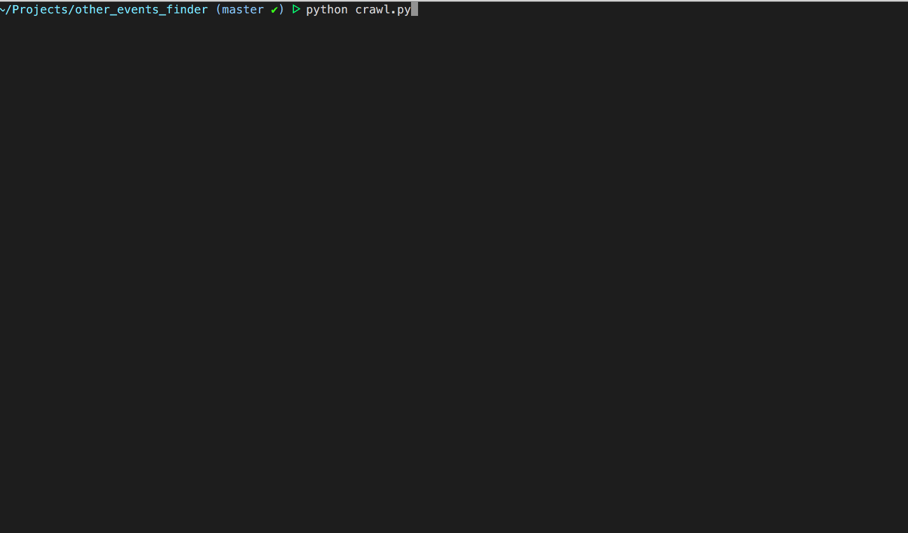 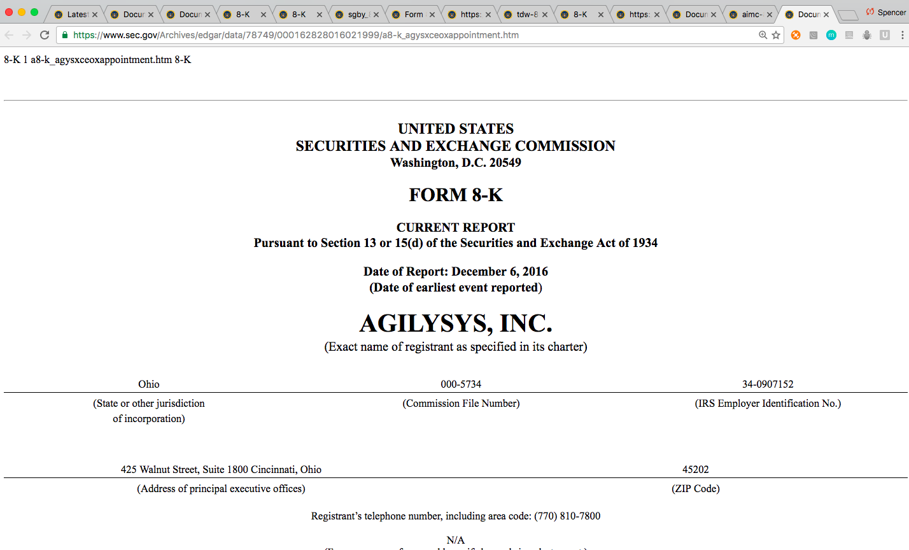A group project at Galvanize, this is a wine-pairing mobile application that takes several input parameters from the user such as meal type, preferred flavor profile, and price range, then returns three new wines that fit those characteristics. Users can save a wine to a favorites list. After the planning and architecture phase of the project, my main role was setting up the intermediate API that received the initial user input. This service took the wine.com API results and applied further filtering and object restructuring, crawled the image URL\'s page for the actual wine bottle image (the response object included only a picture of the label or a URL to a page with the picture of the bottle), and sent the final response back to the client application.
Technologies UsedNode.js, Ionic, Angular, wine.com API
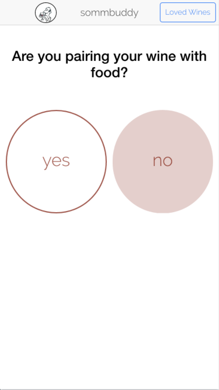 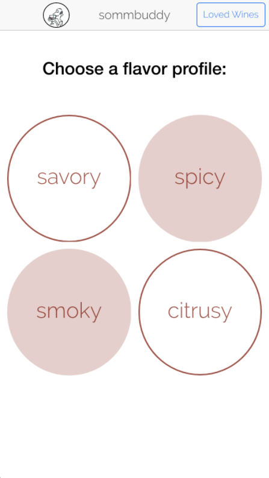 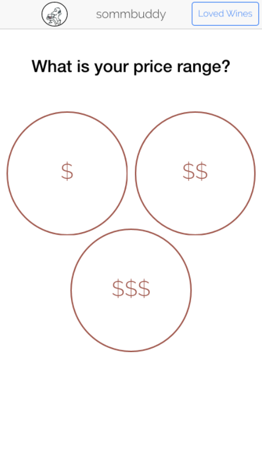 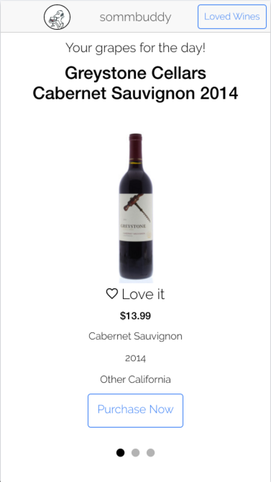 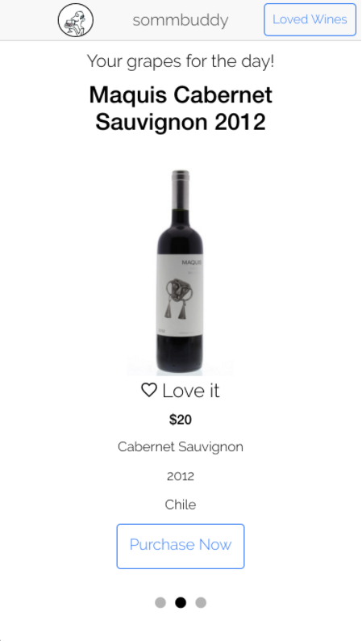 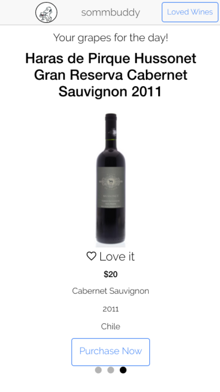An AngularJS 1 exercise, the goal was to build a single-page shopping cart application with a shared service across components. Users can use filter/search options to find the desired product, then add a certain quantity to their shopping bag and proceed to the checkout view, which displays the order total and each item with quantity and subtotal. They can then remove or edit the quantity of each item in their shopping cart.
Technologies UsedJavaScript, Angular, JSON, HTML, CSS
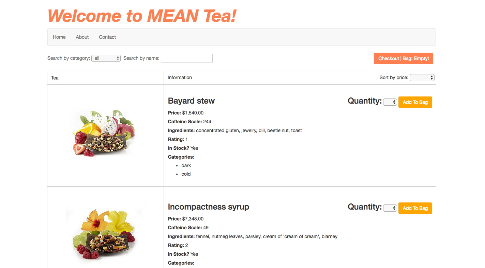 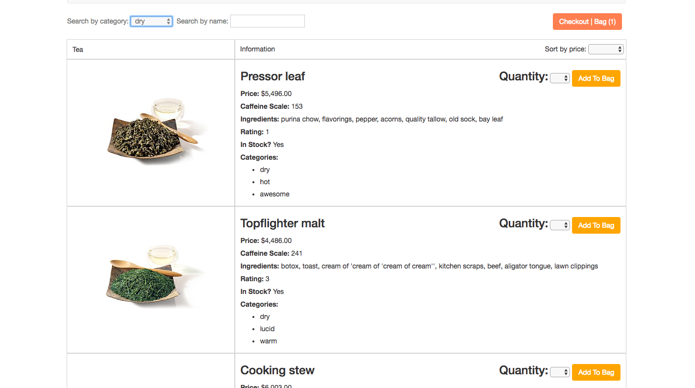 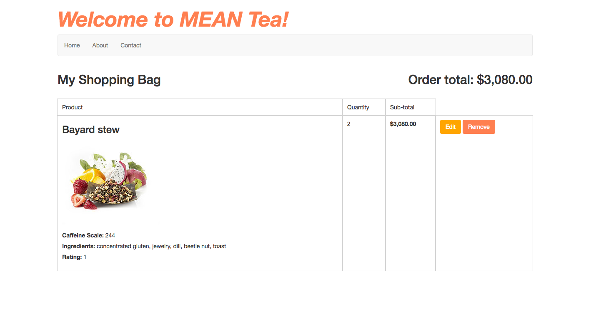 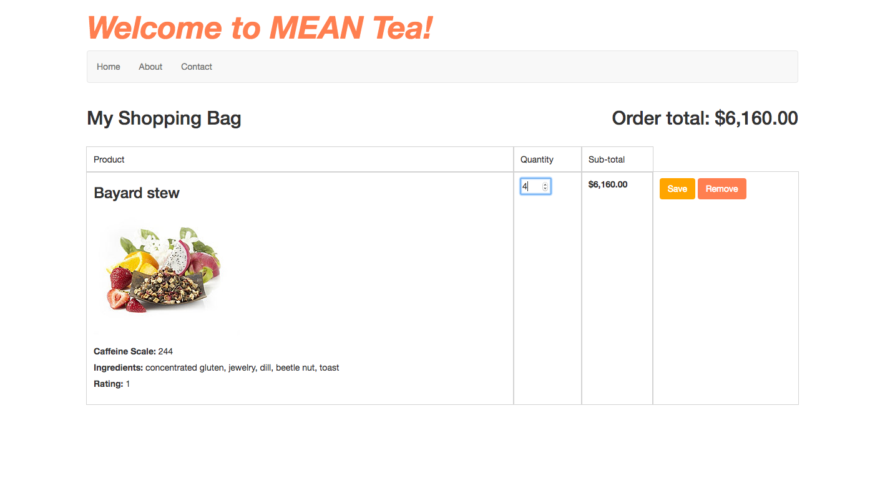A web application that pulls tweets based on a user\'s hashtag search query. The tweets are given a score based on a sentiment analysis algorithm, and are visualized in charts. The user can hover over each node in the chart to read the tweet. The user can then save that search in a board to revisit later. The user can register in the application or with GitHub OAuth.
Technologies UsedNode.js, Express.js, Python, d3.js, PostgreSQL, Knex, Twitter API, Jade/Pug, Bootstrap
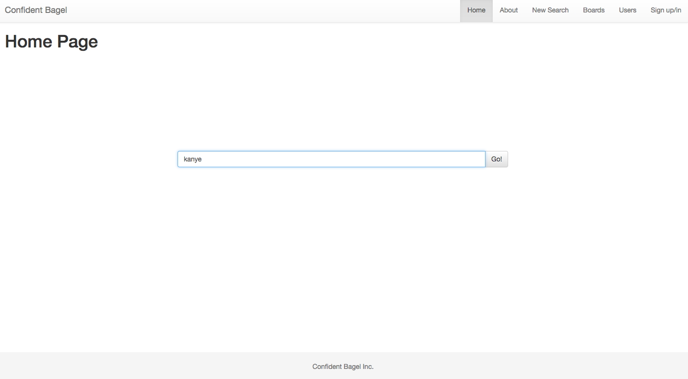 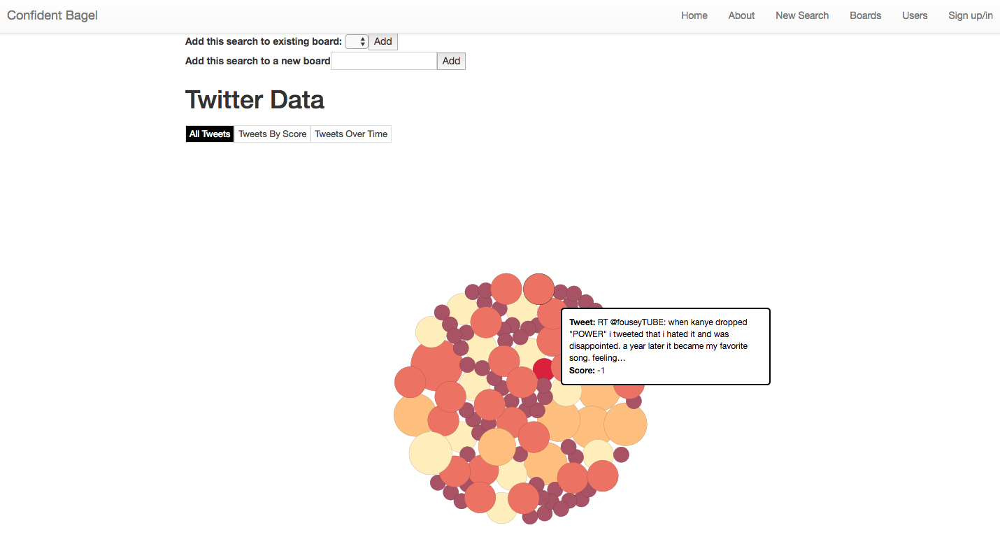 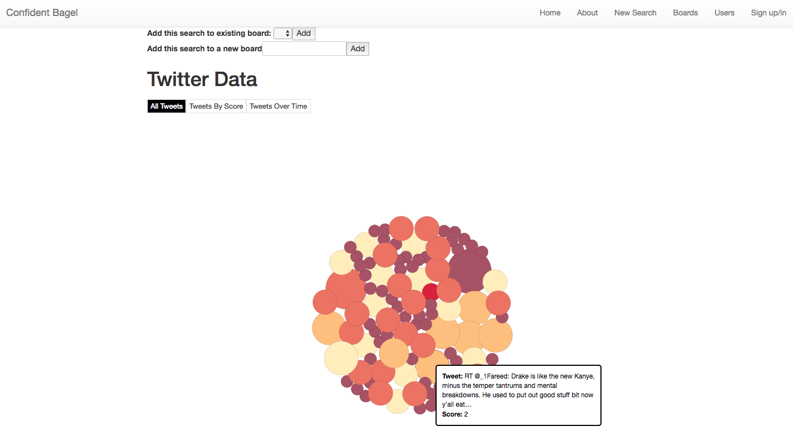 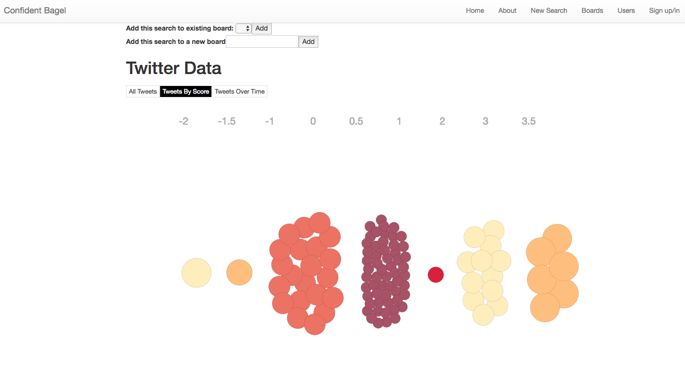A front-end web application that takes text and transforms it by replacing a portion of it with synonyms. The page has two text boxes, one for the source text and one for results. The results can be loaded back into the input box to reiterate the transformation. The logic takes the source text and breaks it into an array of strings, to be channeled into API requests. It then checks each API response for synonyms in the noun, adjective, verb, and adverb categories, in that order based on estimations of frequency in English academic prose. It then picks one of the resulting synonyms at random and places it into a new array of strings, to be joined and appended to the results box on the page.
Technologies UsedJavascript, jQuery, AJAX, JSON, Big Huge Labs Thesaurus API, HTML, CSS
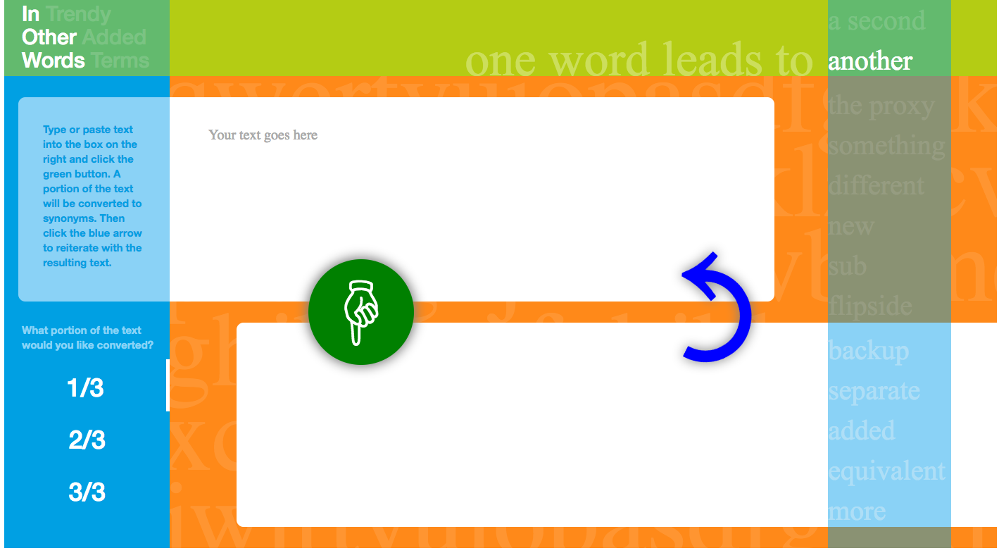 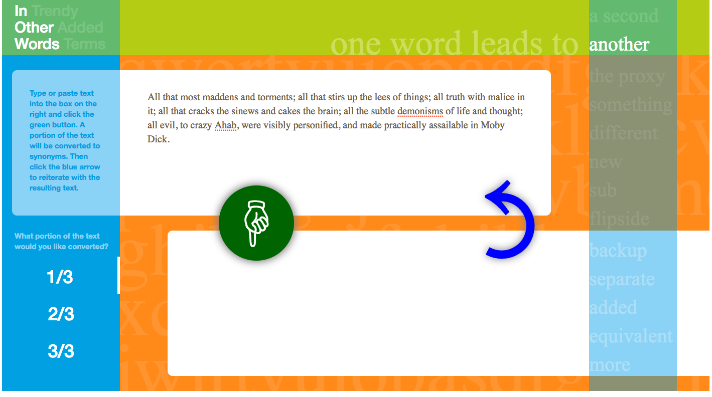 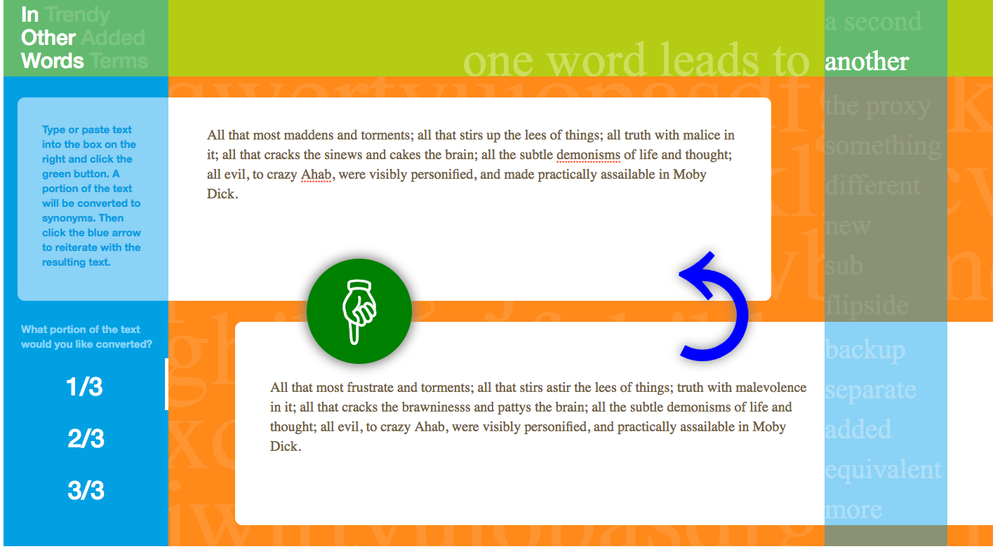 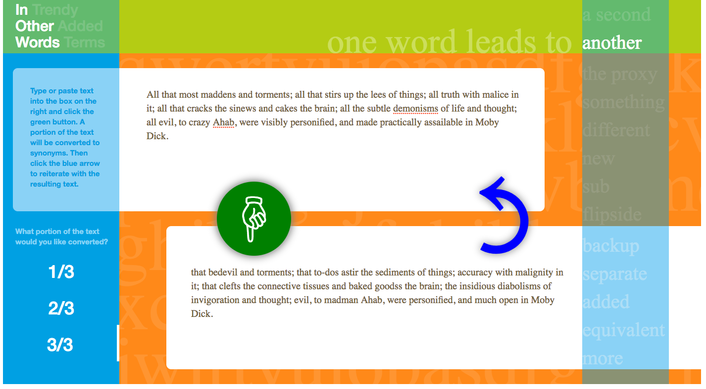